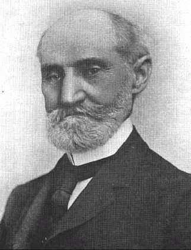

The Materia Medica of the Nosodes.
with provings of the X-ray.
By Henry Clay ALLEN, M. D.
Author of THERAPEUTICS OF FEVERS, KEYNOTES AND CHARACTERISTICS, AND BŒNNINGHAUSEN'S REPERTORY (Slips).IN MEMORIUM.
 Dr. Henry C. Allen was born [on February 10, 1836] in the village of Nilestown, near London, Ontario, and was the son of Hugh and Martha Billings Allen. On his paternal side, he was a descendant of that distinguished family of Vermonters of the same name, Gen. Ira Allen and Ethan Allen, both famous in the revolution. On his maternal side, the Billings' were well known among the Colonial families of Massachusetts Bay, and one of them, the great-grand-father of Dr. Allen, owned the farm lands on which the present city of Salem is built. After selling this property, the family moved to Deerfield, in the Connecticut Valley and were there at the time the Indians pillaged and ravaged that part of the country.
He received his early education in the common and grammar schools at London, where he later taught school for a time. His medical education was acquired at the Western Homeopathic College at Cleveland, Ohio (now the Cleveland Homeopathic College), where he graduated in 1861, and later from the College of Physicians and Surgeons of Canada. Shortly after graduation, he entered the Union Army, serving as a surgeon under General Grant.
After the war he was offered and accepted the professorship on Anatomy in his Alma Mater at Cleveland, and it was here that he first started practicing medicine. Later he resigned and accepted the same chair in the Hahnemann Medical College of Chicago. In 1868 he was offered the Chair of Surgery to succeed Dr. Beebe, but was unable to accept. He then located in Brantford, Ontario, where on December 24th, 1867, he married Selina Louise Goold, who, with his two children, Franklin Lyman Allen and Helen Marian Allen Aird, survives him. In 1875 he moved to Detroit, Michigan, and in 1880, being appointed Professor of Materia Medica at the University of Michigan, he moved to Ann Arbor, where he has since resided.
In 1892 he founded the Hering Medical College and Hospital, of which he was Dean and Professor of Materia Medica until his death, January 22nd, 1909.
Dr. Allen was an honorable senior of the American Institute of Homeopathy ; a number of the International Hahnemannian Association ; of the Illinois Homeopathic Medical Association ; of the Englewood Homeopathic Medical Society ; of the Regular Homeopathic Medical Society of Chicago ; Honorary Vice-President of the Cooper Club of London, England ; and Honorary Member of the Michigan, New York, Pennsylvania and Ohio State Medical Societies and Honorary Member of the Homeopathic Society of Calcutta, India.
He was owner and editor of the Medical Advance for many years. Besides writing many articles in this and other magazines he wrote numerous books, among which are the following : Keynotes of Leading Remedies, lately placed on the Council List of Books for use in the Canadian Medical Colleges ; The Homeopathic Therapeutics of Intermittent Fever, The Homeopathic Therapeutics of Fevers, Therapeutics of Tuberculous Affections, and recently completed the revision of Bœnninghausen's Slip Repertory, which he brought down to date and arranged for rapid and practical work.
This, his latest work, a treatise on the Nosodes, was completed only a short time before his death, and was the result of years of study, experience, and of proving and confirming the symptomatology of many of the nosodes. His observations are here published for the first time.
FRANKLIN LYMAN ALLEN
* * * * *
PUBLISHERS' PREFACE.
It is with deep regret that the publishers are compelled to offer a preface of their own to this great work instead of one by the author, which intervening death prevented.
An outline of the history of this book, so far as we know it, may be of interest here, and indeed is needed. We have no means of knowing when the work was started, but, judging from the manuscript, it must have been many years ago, for much of the manuscript is old, and bears evidence of frequent revision and correction ; of the work of painstaking and conscientious author.
Close towards the end of the year 1908 Dr. Allen wrote us that his work was completed, the manuscript had received its final revision, and was ready for the compositor. The contracts were made, the manuscript was sent to the compositor. Several pages of the first section, Adrenalin, were set up and submitted to the author for style of type, and arrangement, passed on by him as being satisfactory, the compositors were told to go ahead with the work, and then when all this was finished, word came of Dr. Allen's death. This threw the responsibility of seeing the work through the press, and the proof reading, on us. How well this work has been performed the reader can judge for himself. We believe it is a good work. Concerning the character of this book, Nosodes, it may be said that Dr. Allen first, last and all the time, regarded these drugs as homœopathic, and not as isopathic, remedies ; that they were to be proved as homœopathic remedies and prescribed according to the totality of the symptoms. The preliminary remarks, preceding the drugs treated in this book, tell all that we know concerning the source of the provings.
Dr. Allen placed great store by this, his final work, which he, we believe, considered his greatest.
THE PUBLISHERS.
Philadelphia, Pa., Jan. 14, 1910.
Copyright © Médi-T 2003